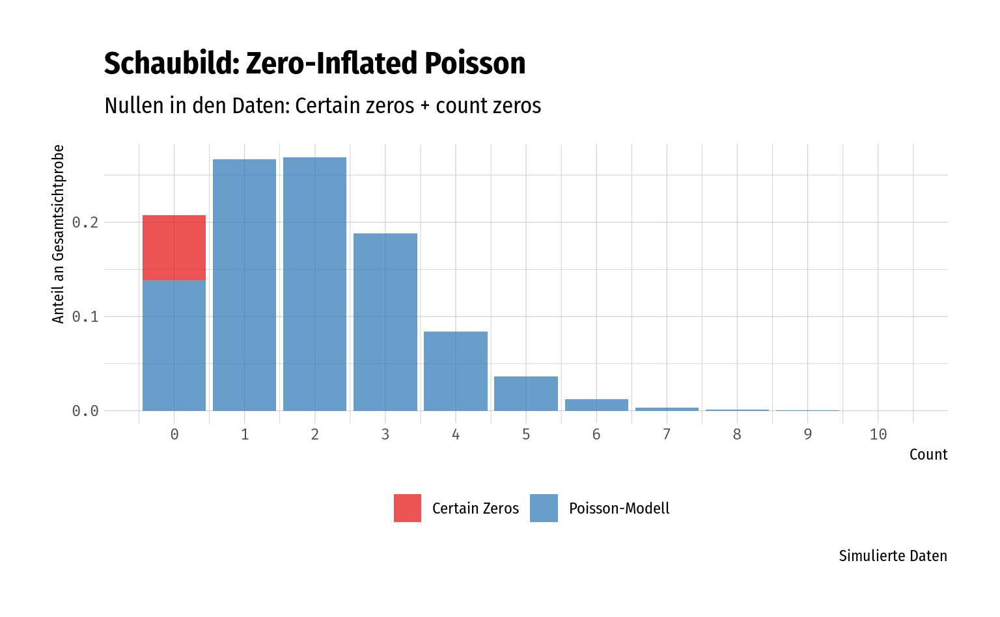

3.6 Zero-Inflated Models (mixture models)
Zero-inflated Modelle sind mixtures, das heißt, sie entstehen durch Mischung zweier Wahrscheinlichkeitsfunktionen. In der Regel wird eine Nullverteilung mit einer regulären Zählverteilung (Poisson, NB, PIG, …) “gemischt”, abhängig von einem mixture parameter \(\pi \in [0,1]\), der z.B. logistisch modelliert wird. Die Nullen im Modell werden dementsprechend durch beide Verteilungen (Nullverteilung, Zählverteilung) beschrieben – im Gegensatz zu hurdle models (vgl. B.3), die Nullen logistisch und die positiven counts über eine truncated distribution modellieren würden.
Zero-inflated distributions wie ZIP und ZINB wurden hergeleitet als zweiteilige mixture distributions. Die allgemeine Form für mixture distributions ist
Definition 3.9 (Mixture distribution und zero-inflated distribution) \[\begin{equation*} P(Y = y) = p \cdot g_1(y) + (1-p) \cdot g_2(y) \end{equation*}\]
mit \(p\) als mixture proportion und \(g_1, g_2\) als Dichte-/Massefunktionen der beiden Komponenten.
Für zero-inflation setzt man \(p\) als rate of zero-inflation \(\pi\), \(g_1\) als degenerierten 0-Verteilung und \(g_2\) als Poisson-PMF oder ähnliche Zähl-Verteilung wie NB, PIG, etc.
Eine alternative Darstellung für eine zero-inflated Verteilung (siehe):
\[\begin{equation*} f_\mathrm{zeroinfl} (y; x, \beta, \pi) = \pi \cdot I_{\{0\}}(y) + (1 - \pi) \cdot f_{\mathrm{count}}(y; x, \beta) \end{equation*}\]
Mit zu modellierendem Erwartungswert
\[\begin{equation*} \mu_i = \pi_i \cdot 0 + (1 - \pi_i) \cdot \exp(x_i^T\beta) \end{equation*}\]
Wobei \(\pi\) in der Regel binomial, bzw. mittels logistischer Regression geschätzt wird.Und im Speziellen, anhand der Beispiele ZIP und ZINB:
Definition 3.10 (Zero-Inflated Poisson Verteilung (ZIP)) Nach Perumean-Chaney u. a. (2013) (p. 1675)
\[\begin{align*} P(Y = 0) &= \pi + (1-\pi) \cdot e^{-\mu} \\ P(Y = y) &= (1 - \pi) \cdot \frac{\mu^y e^{-\mu}}{y!}, \quad y = 1, 2, 3, \ldots \end{align*}\]Definition 3.11 (Zero-Inflated Negative Binomialverteilung (ZINB)) Nach Perumean-Chaney u. a. (2013) (p. 1675)
\[\begin{align*} P(Y = 0) &= \pi + (1 - \pi) \cdot \frac{\theta^\theta}{(\theta + \mu)^\theta} \\ P(Y = y) &= (1 - \pi) \cdot \frac{\Gamma(\theta+y)}{\Gamma(\theta) \Gamma(y + 1)} \frac{\theta^\theta \mu^y}{(\theta + \mu)^{(\theta + y)}}, \quad y = 1, 2, 3, \ldots \end{align*}\]3.6.1 Interpretation
Ein Anwendungsbeispiel der ZIP findet sich auf der Seite der UCLA (SAS, R, zusätzlich gibt es einmal annotated Output (SAS)), wobei der fish-Datensatz verwendet wird.
In diesem Datensatz beobachten wir Nullen mit zwei unterschiedlichen Ursprüngen: Zum Einen haben wir die Nullen der Personen, die geangelt haben, aber keine Fische fingen – und zum Anderen haben wir die Nullen der Personen, die nicht angelten, und daher garantiert auch keine Fische fingen (“certain zeros”) (vgl. auch Abschnitt 4.2.2).
Ein ZIP-Modell erlaubt uns hier also beide Komponenten zu berücksichtigen – sowohl die Personen, die erfolglos angelten, als auch die Personen, die gar nicht angelten.
# ZP basierend auf fish-Daten, Modell aus UCLA-Tutorialseite
m_zip <- pscl::zeroinfl(count ~ child + camper | persons, data = fish)
summary(m_zip)#>
#> Call:
#> pscl::zeroinfl(formula = count ~ child + camper | persons, data = fish)
#>
#> Pearson residuals:
#> Min 1Q Median 3Q Max
#> -1.2369 -0.7540 -0.6080 -0.1921 24.0847
#>
#> Count model coefficients (poisson with log link):
#> Estimate Std. Error z value Pr(>|z|)
#> (Intercept) 1.59789 0.08554 18.680 <2e-16 ***
#> child -1.04284 0.09999 -10.430 <2e-16 ***
#> camper1 0.83402 0.09363 8.908 <2e-16 ***
#>
#> Zero-inflation model coefficients (binomial with logit link):
#> Estimate Std. Error z value Pr(>|z|)
#> (Intercept) 1.2974 0.3739 3.470 0.000520 ***
#> persons -0.5643 0.1630 -3.463 0.000534 ***
#> ---
#> Signif. codes: 0 '***' 0.001 '**' 0.01 '*' 0.05 '.' 0.1 ' ' 1
#>
#> Number of iterations in BFGS optimization: 12
#> Log-likelihood: -1032 on 5 Df| coefficient | value |
|---|---|
| count_(Intercept) | 4.9425841 |
| count_child | 0.3524526 |
| count_camper1 | 2.3025648 |
| zero_(Intercept) | 3.6599163 |
| zero_persons | 0.5687312 |
Wir erhalten zwei Sets an Koeffizienten:
Count-model: Das count model (count_), i.e. Poisson. Hier modellieren wir die Anzahl der gefangen Fische ohne Berücksichtigung der excess zeros. Diese Koeffizienten werden analog einer herkömmlichen Poisson-Regression interpretiert.
Inflation-model: Die binomiale Komponente (zeros_) für die excess zeros, womit wir die Wahrscheinlichkeit von “certain zeros” modellieren. Diese Koeffizienten werden analog einer logistischen Regression interpretiert.
Aus dem UCLA DAE:
persons: If a group were to increase its persons value by one, the odds that it would be in the “Certain Zero” group would decrease by a factor of exp(-0.5643) = 0.5687581. In other words, the more people in a group, the less likely the group is a certain zero.
Intercept: If all of the predictor variables in the model are evaluated at zero, the odds of being a “Certain Zero” is exp(1.2974) = 3.659769. This means that the predicted odds of a group with zero persons is 3.659769 (though remember that evaluating persons at zero is out of the range of plausible values–every group must have at least one person).
nsim <- 10^4
meansim <- 2
tibble::tibble(
counts = rpois(n = nsim, lambda = meansim),
) %>%
count(counts, name = "Poisson") %>%
mutate(
Zeros = floor(Poisson/2),
Zeros = ifelse(counts > 0, 0, Zeros)
) %>%
gather(source, freq, Poisson, Zeros) %>%
mutate(source = forcats::fct_rev(source),
freq = freq/nsim) %>%
ggplot(aes(x = counts, y = freq, fill = source)) +
geom_col(alpha = .75) +
scale_x_continuous(breaks = seq(0, 12)) +
scale_fill_brewer(palette = "Set1", labels = c(Zeros = "Certain Zeros", Poisson = "Poisson-Modell")) +
labs(
title = "Schaubild: Zero-Inflated Poisson",
subtitle = "Nullen in den Daten: Certain zeros + count zeros",
x = "Count", y = "Anteil an Gesamtsichtprobe", fill = "",
caption = "Simulierte Daten"
) +
theme(legend.position = "bottom")
Literatur
Perumean-Chaney, Suzanne E., Charity Morgan, David McDowall, und Inmaculada Aban. 2013. „Zero-Inflated and Overdispersed: What’s One to Do?“ Journal of Statistical Computation and Simulation 83 (9): 1671–83. https://doi.org/10.1080/00949655.2012.668550.